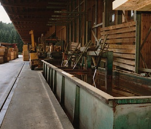

- Nitril
- Polychloropren
- teilweise auch weitere
Gestellbrille
- Nitril
- Polychloropren
- teilweise auch weitere
Gestellbrille
- Nitril
- teilweise auch weitere
Gestellbrille
A1 oder A2 (braun-weiß)
- Nitril
- Butylkautschuk
Dichtschließende Schutzbrille
Korbbrille

Bei der Trogtränkung wird das Holz in Trögen mit speziellen Vorrichtungen mehrere Stunden (meist mehr als 24 Stunden) bis wenige Tage untergetaucht gehalten.
Die Eindringtiefe ist bei der Trogtränkung deutlich größer, die aufgenommenen Holzschutzmittelmengen sind erheblich größer als beim Streichen, Spritzen oder Tauchen.
Eine Sonderform der Trogtränkung ist die Einstelltränkung von Pfählen, z.B. für den Obst- und Weinbau, mit Steinkohlenteer-Imprägnierölen (Kreosote). Diese können dabei erwärmt werden.
Chromathaltige Holzschutzmittel dürfen nach TRGS 618 in der Trogtränkung nicht eingesetzt werden.
Technische Schutzmaßnahmen 1)
Für den Schutz der Umwelt sind eine Reihe baulicher Maßnahmen erforderlich, z.B.:
Organisatorische Maßnahmen
Frisch imprägniertes Holz sollte solange oberhalb der Tränkflüssigkeit auf dem Hubwerk verbleiben, bis kein Holzschutzmittel mehr abtropft.
Persönliche Schutzausrüstungen
Umgang mit Holzschutzmitteln besteht an diesen Anlagen im Allgemeinen nur bei der Bereitstellung der Holzschutzmittel und dem Ansetzen der Imprägnierlösung (siehe Abschnitt „Ansetzen der Imprägnierlösung“). Werden frisch imprägnierte Hölzer – vor allem tropfnasse Hölzer – von Hand umgesetzt, sind Schutzhandschuhe und geeignete Schutzkleidung (Chemikalienschutzanzug oder großflächige Gummischürze) erforderlich (siehe Abschnitt „Umgang mit frisch imprägnierten Hölzern“).
|
|
|
|
|
| Holzschutzmittel | Schutzhandschuhe | Augenschutz | Atemschutz | Schutzkleidung |
| Wässrige Holzschutzmittel mit Bor- oder Kupfersalzen, Quats oder Cu-HDO |
|
Bei Spritzgefahr: Gestellbrille |
Im Allgemeinen nicht erforderlich | Im Allgemeinen nicht erforderlich; Arbeitskleidung |
| Wässrige Holzschutzmittel mit organischen Wirkstoffen |
|
Bei Spritzgefahr: Gestellbrille |
Im Allgemeinen nicht erforderlich | Im Allgemeinen nicht erforderlich; Arbeitskleidung |
| Lösemittelhaltige Holzschutzmittel mit organischen Wirkstoffen |
|
Bei Spritzgefahr: Gestellbrille |
Bei großflächiger Anwendung und/oder schlechten Lüftungsverhältnissen erforderlich: A1 oder A2 (braun-weiß) |
Chemikalienschutzanzug, zumindest großflächige Gummischürze |
| Steinkohlenteerölpräparate |
|
Bei Spritzgefahr: Dichtschließende Schutzbrille Korbbrille |
Bei großflächiger Anwendung und/oder schlechten Lüftungsverhältnissen erforderlich: A1 oder A2 (braun-weiß) | Chemikalienschutzanzug, zumindest großflächige Gummischürze |
Die Handschuh-Datenbank von GISBAU (www.gisbau.de) enthält Schutzhandschuh-Empfehlungen von verschiedenen Handschuh-Herstellern für die Holzschutzmittel-Produktgruppen.
Es werden Handschuhfabrikate mit Tragedauern für den Spritzkontakt (z.B. Streichen) und den Dauerkontakt (z.B. Spritzen) angegeben.
Auf unbedeckte Körperteile sollten Hautschutzmittel aufgetragen werden.
Nach der Arbeit und vor längeren Arbeitspausen sollten die Hände gereinigt und Hautpflegemittel aufgetragen werden.
1)Siehe auch „Merkblatt für den sicheren Betrieb von Nichtdruckanlagen mit wasserlöslichen Holzschutzmitteln“ der Deutschen Gesellschaft für Holzforschung e.V. (DGfH) und im Merkblatt Nr. 3.3/3 „Wasserwirtschaftliche Anforderungen an Holzimprägnieranlagen“ des Bayerischen Landesamtes für Wasserwirtschaft.